SAD – test a zkouška · Úprava signálu: tranzistorové zesilovače a OZ – SAD · https://balnerm.github.io/pripravy/sad/12_uprava.html
Přednáška 2
Úprava signálu: tranzistorové zesilovače a operační zesilovač
Biologický signál má mikrovolty až milivolty, obvody za ním ale pracují s volty. Základní úpravou signálu je proto zesílení. Přednáška ukazuje, jak zesiluje tranzistor (bipolární a MOSFET) a jak se jeho zapojení postupně vylepšují, aby byl zesilovač stabilní. Pak přechází k operačnímu zesilovači: čím se reálný OZ liší od ideálního (offset, rychlost přeběhu, pokles zisku s frekvencí), odkud se bere hranice −3 dB a jak OZ pracuje jako komparátor.
Proč signál zesilovat
Úprava signálu je v akviziční cestě krok před A/D převodem. Na slidech jsou dva důvody, proč je první úpravou zesílení:
- Biologické signály jsou v řádech µV až mV (EEG desítky µV, EKG jednotky mV).
- Zpracování probíhá v obvodech, které pracují s napětím na úrovni logiky TTL nebo CMOS, tedy jednotek voltů.
Zesilovač je obvod, jehož výstupní signál je zvětšenou kopií vstupního signálu; energii na zvětšení bere z napájecího zdroje. Napěťové zesílení je poměr výstupního a vstupního napětí, proudové zesílení poměr výstupního a vstupního proudu: \[ A_u = \frac{u_\text{výst}}{u_\text{vst}} \] \[ A_i = \frac{i_\text{výst}}{i_\text{vst}} \]
zesilovač „nafoukne“ slabý signál tak, aby s ním šlo dál pracovat. Nevyrábí energii z ničeho – bere ji z napájení a signál jen řídí, kolik jí pustí na výstup.
EKG má amplitudu asi 1 mV, A/D převodník má rozsah asi 1 V. Potřebné zesílení:
\[ A_u = \frac{1\ \text{V}}{1\ \text{mV}} = 1000 \]V decibelech (viz decibel):
\[ 20 \log 1000 = 60\ \text{dB} \]Bipolární tranzistor jako zesilovač
Bipolární tranzistor (BJT, Bipolar Junction Transistor) je polovodičová součástka se třemi vývody – bází (B), kolektorem (C) a emitorem (E) –, u které malý proud bází řídí mnohem větší proud kolektorem. Oba proudy odtékají emitorem: \[ i_E = i_B + i_C \]
tranzistor je „ventil“: malým proudem do báze otevírám velký proud z kolektoru do emitoru. Emitorem teče součet obou proudů.
Proudový zesilovací činitel \(\beta\), v katalozích \(h_{21E}\), je poměr proudu kolektorem a proudu bází tranzistoru: \[ \beta = h_{21E} = \frac{i_C}{i_B} \]
říká, kolikrát se zesílí proud bází – je to proudové zesílení tranzistoru. Typicky bývá ve stovkách.
Na slidu je tranzistor v měřicím zapojení: zdroj \(V_{BE}\) posílá přes mikroampérmetr proud do báze, zdroj \(V_{CC}\) přes miliampérmetr proud do kolektoru, emitor je na společné zemi. Závislost \(i_C\) na \(i_B\) je přímka:
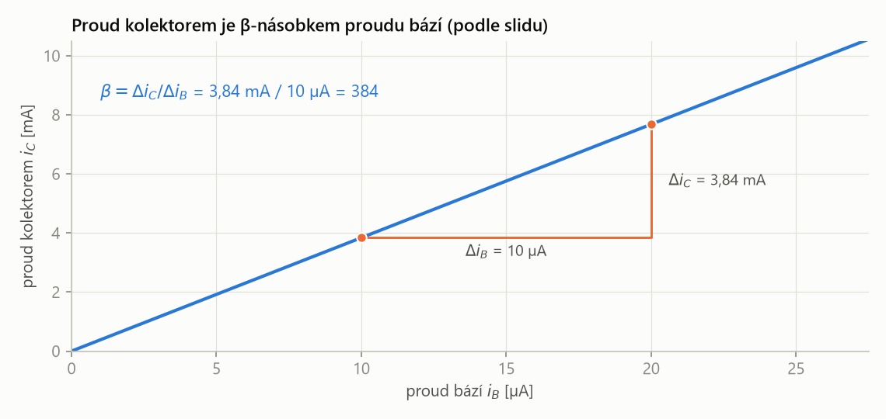
Závislost je lineární – kolektorový proud je pořád stejný násobek proudu bází. Sklon přímky je \(\beta\). Z trojúhelníku na slidu: zvětšení proudu bází o 10 µA zvětší proud kolektorem o 3,84 mA.
\[ \beta = \frac{\Delta i_C}{\Delta i_B} = \frac{3{,}84\ \text{mA}}{10\ \mu\text{A}} = 384 \]Zapojení se společným emitorem (SE) je základní zapojení tranzistorového zesilovače: vstupní signál se přivádí do báze, výstup se odebírá z kolektoru a emitor je společný vstupu i výstupu (je na zemi, případně přes rezistor).
signál „pootvírá“ tranzistor přes bázi a změna kolektorového proudu vytvoří na rezistoru v kolektoru velkou změnu napětí. Zesiluje napětí i proud a výstup je obrácený (invertovaný).
Odpor emitoru a vstupní odpor
Vnitřní odpor emitoru \(r_E\) (na slidu \(R_E\)) je odpor, přes který uvnitř tranzistoru prochází proud z báze do emitoru; u bipolárních tranzistorů je typicky kolem 25 Ω. Při pohledu do báze se jeví zvětšený \(\beta\)-krát.
do báze teče jen malý proud, ale emitorem teče \(\beta\)-krát větší. Proto se odpor v emitoru „z pohledu báze“ jeví \(\beta\)-krát větší.
| \(R_\text{in}\) | vstupní odpor tranzistoru při pohledu do báze |
| \(\beta\) | proudový zesilovací činitel (\(h_{21E}\)) |
| \(r_E\) | vnitřní odpor emitoru, typicky asi 25 Ω |
\(h_{21E} = 400\), \(r_E = 25\ \Omega\):
\[ R_\text{in} = 400 \cdot 25\ \Omega = 10\ \text{k}\Omega \]Tranzistorový zesilovač SE má tedy poměrně malý vstupní odpor. Pro měkký biologický zdroj (viz P1) je to málo – zdroj by se zatěžoval.
Hodnota 25 Ω platí pro proud emitorem asi 1 mA. Obecně se udává \(r_E \approx 25\ \text{mV} / I_E\), takže při menším proudu je \(r_E\) větší. Na slidu se pracuje s typickou hodnotou 25 Ω a ta stačí.
Pracovní bod a stabilita zapojení SE
Tranzistor zesiluje jen tehdy, když je trochu otevřený už bez signálu. Střídavý signál pak kolektorový proud zvětšuje i zmenšuje kolem této klidové hodnoty. Klidový stav nastavují rezistory a říká se mu pracovní bod.
Pracovní bod (klidový bod) tranzistoru jsou stejnosměrné hodnoty proudů a napětí tranzistoru bez vstupního signálu (klidový proud báze \(I_B\), kolektoru \(I_C\) a napětí na kolektoru), nastavené rezistory v okolí tranzistoru.
nastavení pracovního bodu = „lehce otevřít tranzistor“. Napětí na kolektoru se volí zhruba na polovinu napájecího napětí, aby se výstup mohl stejně daleko hýbat nahoru i dolů.
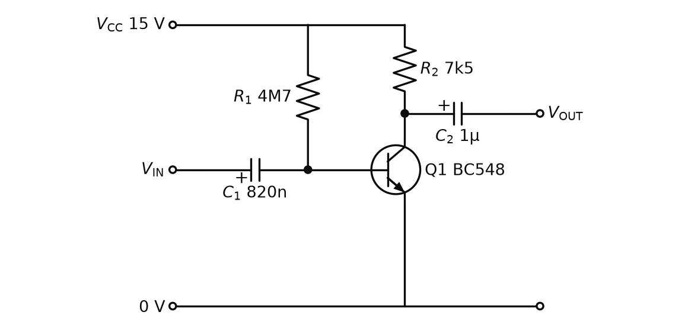
Pracovní bod nastavuje jediný rezistor \(R_1\) z napájení do báze. Kondenzátory \(C_1\) a \(C_2\) propustí střídavý signál, ale stejnosměrné napětí ne – pracovní bod se tak nepřenáší do zdroje signálu ani na výstup.
\(V_{CC}\) = 15 V, \(R_1\) = 4,7 MΩ, \(R_2\) = 7,5 kΩ, \(\beta\) = 400, na přechodu báze–emitor je asi 0,7 V.
1. Proud bází:
\[ I_B = \frac{15 - 0{,}7}{4{,}7\ \text{M}\Omega} = 3{,}04\ \mu\text{A} \]2. Proud kolektorem:
\[ I_C = \beta\, I_B = 400 \cdot 3{,}04\ \mu\text{A} = 1{,}22\ \text{mA} \]3. Napětí na kolektoru:
\[ U_C = 15 - 7{,}5\ \text{k}\Omega \cdot 1{,}22\ \text{mA} = 5{,}9\ \text{V} \]Kolektor je zhruba na polovině napájení – pracovní bod je nastavený dobře. Ale jen pro \(\beta = 400\).
Slide uvádí hlavní nevýhodu tohoto zapojení: horší stabilitu, která je navíc velmi závislá na teplotě okolí. Proud bází je tu pevný, takže proud kolektorem je přímo úměrný \(\beta\) – a \(\beta\) se liší kus od kusu a mění se s teplotou.
Stejné zapojení, ale tranzistor s \(\beta = 600\) (jiný kus nebo teplejší):
\[ I_C = 600 \cdot 3{,}04\ \mu\text{A} = 1{,}83\ \text{mA} \] \[ U_C = 15 - 7{,}5\ \text{k}\Omega \cdot 1{,}83\ \text{mA} = 1{,}3\ \text{V} \]Kolektor je skoro na zemi a výstup se už nemá kam hýbat dolů – zesilovač ořezává signál. S \(\beta = 200\) je naopak \(U_C = 10{,}4\ \text{V}\). Pracovní bod „ujíždí“.
Zlepšení 1: R1 z kolektoru
Slide „Stabilita zesilovače“: kladný vývod \(R_1\) se nepřipojí na napájení, ale do kolektoru.
- \(R_1\) je teď připojen „na polovinu“ napájecího napětí, takže se jeho odpor může zmenšit na polovinu (4M7 → 2M2) při stejném proudu bází jako předtím.
- Zapojení neovlivňuje zesílení, ale má vliv na stabilitu.
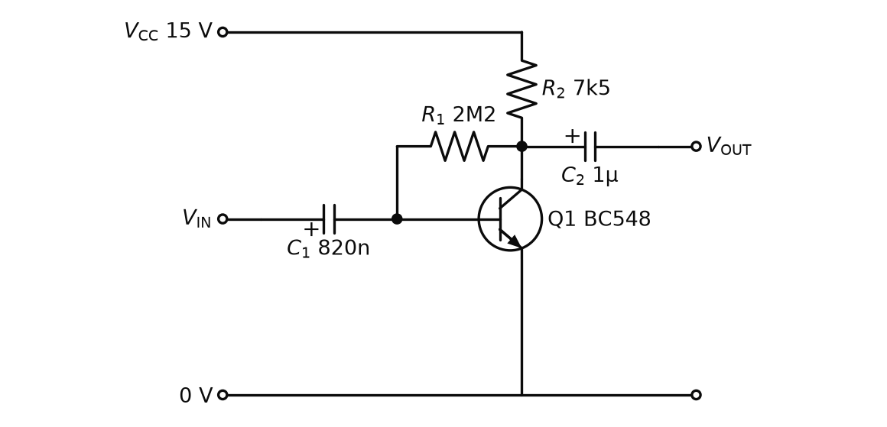
Je to záporná zpětná vazba, stejný princip jako u OZ. Když se proud kolektorem zvětší (větší \(\beta\), teplo), klesne napětí na kolektoru. Tím klesne i napětí na \(R_1\) a do báze teče menší proud – a ten proud kolektorem zase zmenší. Tranzistor se sám „brzdí“.
Kontrola, že 2M2 dává stejný proud bází (kolektor na polovině, 7,5 V):
\[ I_B = \frac{7{,}5 - 0{,}7}{2{,}2\ \text{M}\Omega} = 3{,}09\ \mu\text{A} \]Zlepšení 2: dělič v bázi a rezistor v emitoru
Nejpoužívanější zapojení SE (slidy „Stabilizace zapojení SE s napěťovým děličem“):
- Napěťový dělič \(R_1\)–\(R_2\) definuje klidové napětí na bázi.
- Další zlepšení přinese \(R_4\) mezi emitor a zem, přičemž \(R_4 \gg R_E\) (vnitřní odpor emitoru).
- Při \(I_C\) asi 1 mA je na \(R_4\) = 1 kΩ úbytek 1 V.
- Dělič musí nastavit napětí báze alespoň o 0,7 V vyšší (úbytek na přechodu báze–emitor), tedy aspoň 1,7 V.
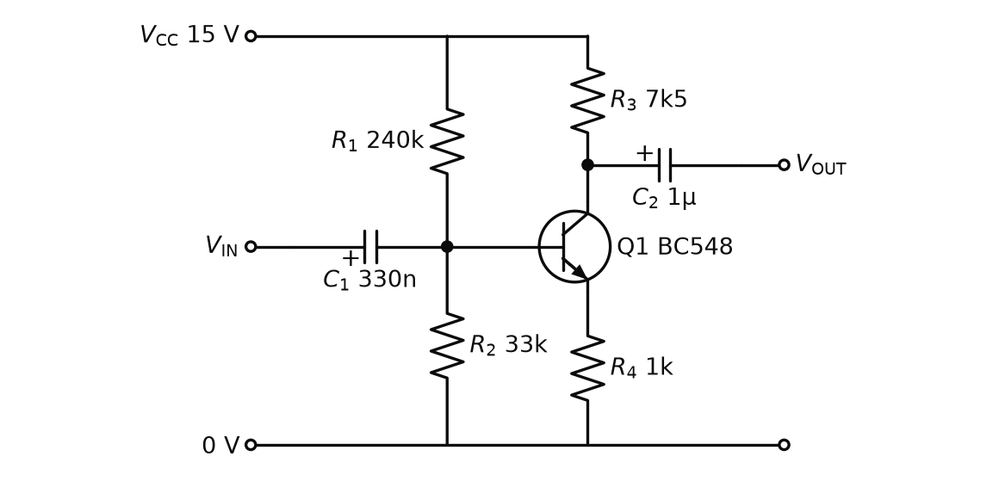
Napětí báze drží dělič, napětí emitoru je o 0,7 V níž a proud emitorem pak určuje \(R_4\), ne \(\beta\). Proto je pracovní bod stabilní.
Pracovní bod:
\[ U_B = V_{CC}\,\frac{R_2}{R_1 + R_2} \] \[ I_C \approx I_E = \frac{U_B - 0{,}7\ \text{V}}{R_4} \]Vstupní odpor a napěťové zesílení (podle slidu):
\[ R_\text{IN} = R_1 \parallel R_2 \parallel (\beta R_4) \] \[ A_u = -\frac{R_3}{R_4} \]| \(U_B\) | klidové napětí báze (z nezatíženého děliče) |
| \(V_{CC}\) | napájecí napětí |
| \(R_1\), \(R_2\) | dělič v bázi |
| \(R_3\) | kolektorový rezistor |
| \(R_4\) | emitorový rezistor; „z pohledu báze“ se jeví jako \(\beta R_4\) |
| \(\parallel\) | paralelní spojení odporů |
| \(A_u\) | napěťové zesílení; minus = výstup je obrácený |
Změní-li se napětí báze o \(u_\text{vst}\), změní se o totéž napětí emitoru (rozdíl 0,7 V zůstává). Proud emitorem se tedy změní o \(u_\text{vst}/R_4\). Stejná změna proudu teče kolektorem a na \(R_3\) vytvoří změnu napětí \(R_3 \cdot u_\text{vst}/R_4\). Větší proud = větší úbytek na \(R_3\) = nižší napětí kolektoru, odtud minus. Zesílení tak závisí jen na poměru dvou rezistorů, ne na \(\beta\) – stejná myšlenka jako u invertujícího zesilovače s OZ.
Proudové zesílení je dáno zesilovacím činitelem \(\beta\).
\(V_{CC}\) = 15 V, \(R_1\) = 240 kΩ, \(R_2\) = 33 kΩ, \(R_3\) = 7,5 kΩ, \(R_4\) = 1 kΩ, \(\beta\) = 400.
1. Napětí báze z děliče:
\[ U_B = 15 \cdot \frac{33}{240 + 33} = 1{,}81\ \text{V} \]To je víc než požadovaných 1,7 V.
2. Proud emitorem a kolektorem:
\[ I_C \approx \frac{1{,}81 - 0{,}7}{1\ \text{k}\Omega} = 1{,}11\ \text{mA} \]3. Vstupní odpor (\(\beta R_4 = 400\ \text{k}\Omega\)):
\[ R_\text{IN} = 240\ \text{k}\Omega \parallel 33\ \text{k}\Omega \parallel 400\ \text{k}\Omega = 27\ \text{k}\Omega \]4. Napěťové zesílení:
\[ A_u = -\frac{7{,}5\ \text{k}\Omega}{1\ \text{k}\Omega} = -7{,}5 \]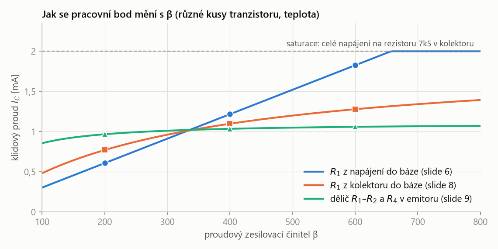
Postup na slidech je vidět v jednom grafu: s \(R_1\) z napájení se proud mění přímo úměrně \(\beta\) (při \(\beta\) = 200 / 600 je 0,61 / 1,83 mA). Zpětná vazba z kolektoru změnu zmírní (0,77 / 1,28 mA). S děličem a \(R_4\) je proud skoro konstantní (0,97 / 1,06 mA) – pracovní bod je stabilní.
„Tranzistor musím nejdřív lehce otevřít – nastavit pracovní bod, aby kolektor byl zhruba na polovině napájení. Když to udělám jen rezistorem do báze, proud kolektoru je \(\beta\)-krát proud báze a \(\beta\) se mění s teplotou i kus od kusu, takže pracovní bod ujíždí. Proto se báze napájí z děliče a do emitoru se dá rezistor \(R_4\): proud pak určuje \(R_4\), ne \(\beta\). Napěťové zesílení je \(-R_3/R_4\), proudové je dáno \(\beta\), vstupní odpor je \(R_1 \parallel R_2 \parallel \beta R_4\).“
Zapojení se společným kolektorem (emitorový sledovač)
Zapojení se společným kolektorem (SC, emitorový sledovač) je tranzistorový zesilovač, u kterého je kolektor připojen přímo na napájení, signál se přivádí do báze a výstup se odebírá z emitoru. Napěťové zesílení je 1, ale zapojení zesiluje proud (a tím výkon).
napětí chci zachovat, proud posílit. Emitor „sleduje“ bázi (o 0,7 V níž), ale výstup může dodat \(\beta\)-krát větší proud, než odebírá vstup. Je to tranzistorová obdoba sledovače s OZ.
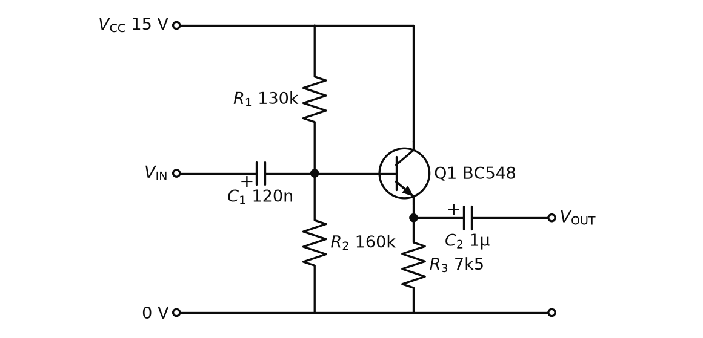
Chceme pracovní napětí emitoru na \(\tfrac{1}{2} V_{CC} = 7{,}5\ \text{V}\), emitorový rezistor \(R_3 = 7{,}5\ \text{k}\Omega\).
1. Proud kolektorem (≈ emitorem):
\[ I_C \approx \frac{7{,}5\ \text{V}}{7{,}5\ \text{k}\Omega} = 1\ \text{mA} \]2. Napětí, které musí nastavit dělič na bázi:
\[ U_B = 7{,}5 + 0{,}7 = 8{,}2\ \text{V} \]3. Kontrola děliče ze slidu (\(R_1 = 130\ \text{k}\Omega\), \(R_2 = 160\ \text{k}\Omega\)):
\[ U_B = 15 \cdot \frac{160}{130 + 160} = 8{,}28\ \text{V} \]Darlingtonovo zapojení
Darlingtonovo zapojení (Darlingtonův pár) jsou dva tranzistory zapojené tak, že emitorový proud prvního tranzistoru \(T_1\) je proudem báze druhého \(T_2\) a kolektory jsou spojené. Navenek se chová jako jeden tranzistor se třemi vývody C, B, E a s proudovým zesílením přibližně rovným součinu zesílení obou tranzistorů.
první tranzistor zesílí proud báze, druhý zesílí výsledek ještě jednou – celkové zesílení je zesílení jednoho krát zesílení druhého.
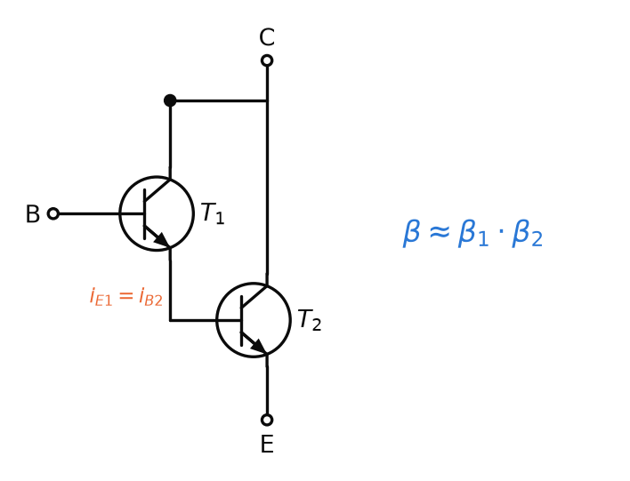
- Pár může vzniknout propojením dvou tranzistorů, většinou se ale vyrábí jako celek na jednom čipu.
- Má tři standardní vývody: C, B, E.
- Tranzistory nemusí být stejného typu – velmi často je \(T_1\) nízkonapěťový a \(T_2\) výkonový.
| \(\beta\) | proudový zesilovací činitel celého páru |
| \(\beta_1\), \(\beta_2\) | zesilovací činitele tranzistorů \(T_1\) a \(T_2\) |
Odvození: proud báze \(i_B\) se v \(T_1\) zesílí na \(\beta_1 i_B\); tento proud (přesněji emitorový proud \(T_1\)) vtéká do báze \(T_2\) a ten ho zesílí \(\beta_2\)-krát. Přesně vyjde \(\beta_1\beta_2 + \beta_1 + \beta_2\), ale pro velká \(\beta\) jsou poslední dva členy zanedbatelné.
\(T_1\) nízkonapěťový s \(\beta_1 = 400\), \(T_2\) výkonový s \(\beta_2 = 50\):
\[ \beta \approx 400 \cdot 50 = 20\,000 \]Proud báze 0,1 mA tak řídí proud kolektorem 2 A.
Rozdílový zesilovač s tranzistory
Rozdílový zesilovač s tranzistory (diferenční pár) tvoří dva stejné tranzistory se spojenými emitory, které napájí společný rezistor (zdroj proudu) z napětí \(V_{EE}\). Signály se přivádějí do obou bází a výstupní napětí na kolektoru je úměrné rozdílu vstupních napětí.
oba tranzistory se „přetahují“ o stejný proud z \(R_3\). Když jeden vstup převýší druhý, jeho tranzistor si vezme víc proudu a druhý méně. Stejná změna na obou vstupech nic nezmění. Je to vstupní stupeň každého OZ.
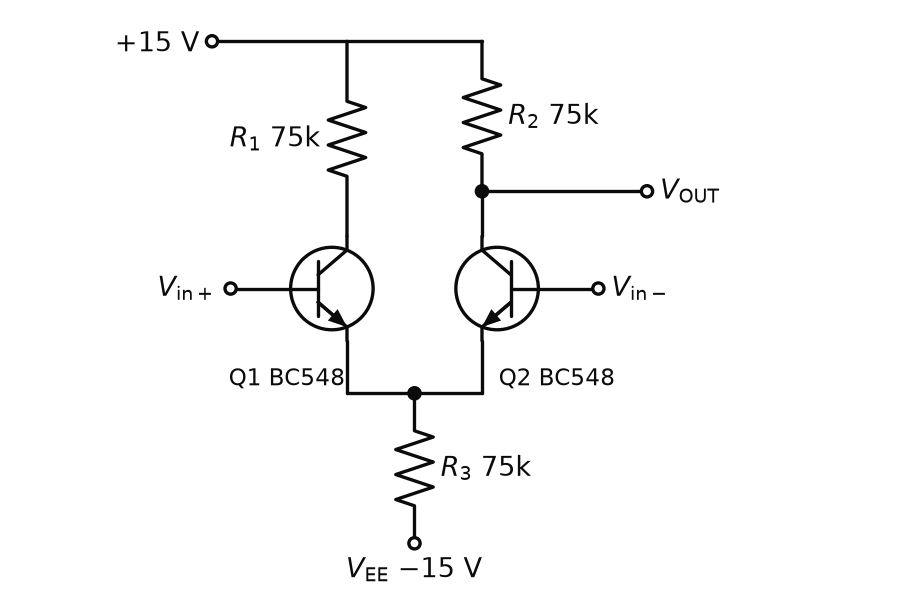
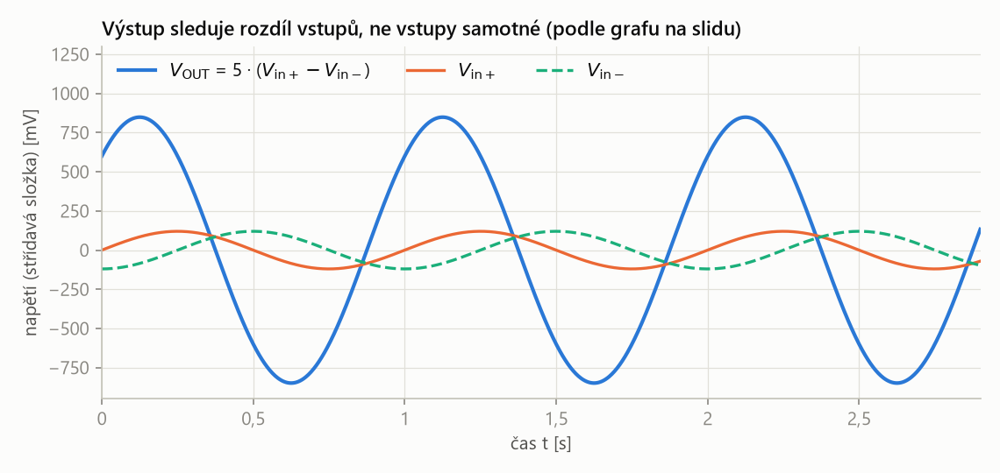
Výstup nekopíruje ani jeden vstup, ale jejich rozdíl. Rozdíl dvou sinusovek 120 mV posunutých o čtvrt periody má amplitudu
\[ 120\ \text{mV} \cdot \sqrt{2} = 170\ \text{mV} \]a výstup 850 mV je jeho pětinásobek (\(5 \cdot 170 = 849\)). Kdyby byly oba vstupy stejné, výstup by se nehýbal – to je potlačení souhlasného signálu.
Báze jsou bez signálu na 0 V, emitory tedy na −0,7 V.
1. Proud rezistorem \(R_3\) do \(V_{EE} = -15\ \text{V}\):
\[ I_{R3} = \frac{-0{,}7 - (-15)}{75\ \text{k}\Omega} = 0{,}19\ \text{mA} \]2. Rozdělí se rovným dílem, každým tranzistorem teče 0,095 mA.
3. Napětí kolektoru:
\[ U_C = 15 - 75\ \text{k}\Omega \cdot 0{,}095\ \text{mA} = 7{,}85\ \text{V} \]Kolektor je zase zhruba na polovině kladného napájení.
Zesilovač? Laděný (selektivní) zesilovač
Slide „Zesilovač?“ ukazuje SE s děličem, kde je místo kolektorového rezistoru paralelní obvod LC (\(C_3\) = 820 pF, \(L_1\) = 3,3 mH), a ptá se: k čemu slouží toto zapojení?
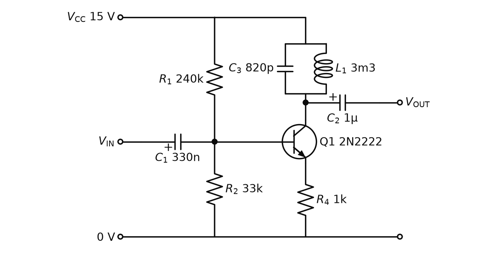
Selektivní (laděný) zesilovač je zesilovač, který má místo kolektorového rezistoru paralelní rezonanční obvod LC; zesiluje jen signály v úzkém pásmu kolem rezonanční frekvence \(f_0\) obvodu LC, ostatní frekvence téměř nezesiluje.
tranzistor zesiluje selektivně jen určitou frekvenci. Paralelní LC má na rezonanční frekvenci velkou impedanci (a zesílení je velké jako u velkého \(R_3\)), mimo ni malou. Podobně funguje třeba rádio – naladí se jen na jednu stanici.
| \(f_0\) | rezonanční frekvence – frekvence, kterou zesilovač zesiluje nejvíc |
| \(L\) | indukčnost cívky (\(L_1\)) |
| \(C\) | kapacita kondenzátoru (\(C_3\)) |
\(L_1 = 3{,}3\ \text{mH}\), \(C_3 = 820\ \text{pF}\).
1. Součin pod odmocninou:
\[ LC = 3{,}3 \cdot 10^{-3} \cdot 820 \cdot 10^{-12} = 2{,}706 \cdot 10^{-12}\ \text{s}^2 \]2. Rezonanční frekvence:
\[ f_0 = \frac{1}{2\pi \cdot 1{,}645 \cdot 10^{-6}\ \text{s}} \cong 96{,}7\ \text{kHz} \]MOSFET
MOSFET (Metal Oxide Semiconductor Field Effect Transistor) je unipolární tranzistor řízený elektrickým polem: napětí na izolované řídicí elektrodě gate (g) ovládá vodivost kanálu mezi elektrodami source (s) a drain (d).
bipolární tranzistor se řídí proudem do báze, MOSFET napětím na gate. Gate je od kanálu izolovaná oxidem, takže do ní neteče stejnosměrný proud – vstupní odpor je obrovský.
Prahové napětí \(V_\text{th}\) (threshold) je napětí mezi gate a source, od kterého začne kanálem MOSFETu protékat proud drainem; pod prahem tranzistor nevede.
MOSFET se „neotevírá“ od nuly. Dokud napětí gate nepřekročí práh (na slidu 1,8 V), je zavřený a na signál nereaguje.
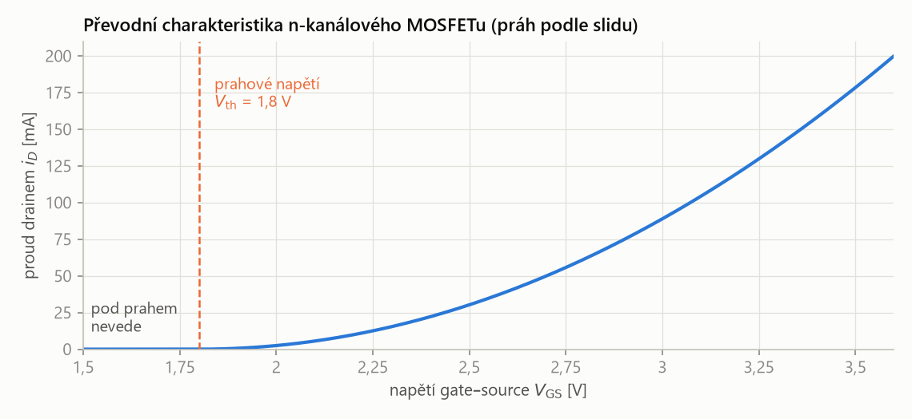
VA charakteristika je „zatížena“ prahovým napětím: do 1,8 V se nic neděje, pak proud prudce roste. Aby tranzistor zesiloval i malý střídavý signál, musí být gate předem posunuta nad práh – předpětí.
Na slidu je napsáno „řízen polem na vstupu gain“. Správně je gate (hradlo) – proto zkratka g.
Zapojení SS a SD
MOSFET má stejná základní zapojení jako bipolární tranzistor, jen se vývody jmenují jinak: společný source (SS) odpovídá SE, společný drain (SD) odpovídá SC.
- SS: kvůli prahovému napětí se gate předpíná děličem \(R_1\)–\(R_2\) (zde asi 4 V).
- SD: napěťový sledovač s MOSFETem – výstup ze source, zesílení asi 1.
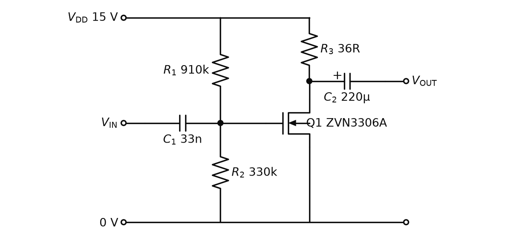
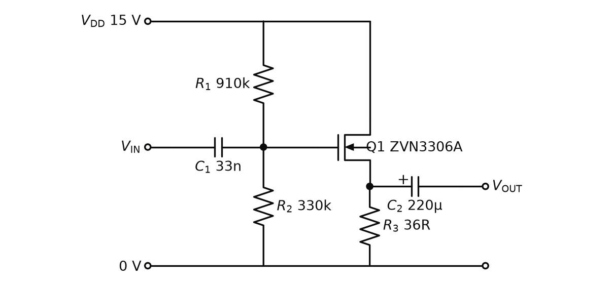
\(V_{DD}\) = 15 V, \(R_1\) = 910 kΩ, \(R_2\) = 330 kΩ. Do gate neteče proud, dělič je nezatížený:
\[ U_G = 15 \cdot \frac{330}{910 + 330} = 3{,}99\ \text{V} \approx 4\ \text{V} \]To je nad prahem 1,8 V, tranzistor je otevřený. Vstupní odpor celého stupně je jen dělič:
\[ R_\text{IN} = 910\ \text{k}\Omega \parallel 330\ \text{k}\Omega = 242\ \text{k}\Omega \]To je asi devětkrát víc než 27 kΩ u bipolárního SE s děličem – a dělič lze udělat ještě vysokoohmovější.
Pár zajímavých aplikací
Poslední slide o tranzistorech ukazuje dvě zapojení s otázkou „k čemu slouží?“. Odpověď na slidu není; níže je výklad podle obecné teorie.
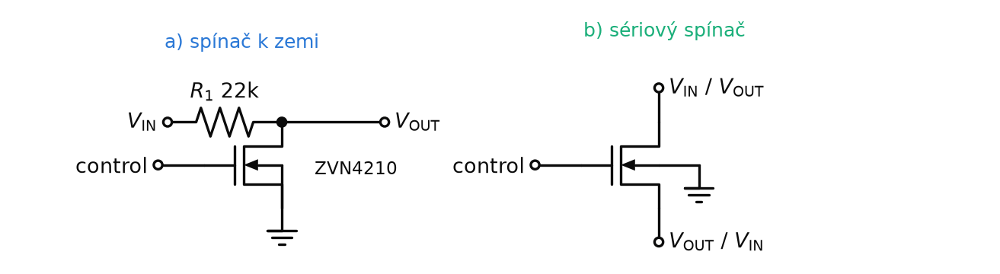
- a) Spínač k zemi: když je na „control“ napětí nad prahem, MOSFET sepne a stáhne výstup k 0 V – signál se umlčí. Když je zavřený, prochází signál přes \(R_1\) na výstup.
- b) Sériový (analogový) spínač: MOSFET je v sérii se signálem. Otevřený kanál vede v obou směrech, proto jsou svorky označeny „VIN/VOUT“ a „VOUT/VIN“. Takové spínače tvoří analogové multiplexery (přednáška P8).
BJT: proud báze řídí \(\beta\)-krát větší proud kolektoru. SE zesiluje napětí i proud, stabilní je s děličem a \(R_4\) (\(A_u = -R_3/R_4\)). SC (sledovač) zachová napětí a posílí proud, Darlington má \(\beta \approx \beta_1\beta_2\). Diferenční pár zesiluje rozdíl, LC v kolektoru dělá laděný zesilovač. MOSFET je řízen napětím na gate, má práh a potřebuje předpětí.
Operační zesilovač
Podrobně jsou OZ a jejich zapojení v základech Z3. Slidy přidávají:
- OZ jsou precizní diferenciální zesilovače s vysokým ziskem. Původně sloužily k matematickým operacím v analogových počítačích (odtud „operační“); tuto funkci dnes převzaly mikroprocesory.
- OZ lze sestavit z jednotlivých tranzistorů a rezistorů, prakticky všechny se ale vyrábějí jako integrované obvody – desítky typů s různými kombinacemi vlastností.
- Standardně se napájejí symetrickým napětím, obvykle ±5 V až ±18 V; existují i speciální OZ pro ±1 V.
- Mohou být napájeny i nesymetricky (jen kladné napětí a zem); pak je omezen rozsah vstupního napětí.
Vstupy a výstup
- Invertující (−) a neinvertující (+) vstup jsou první částí zesilovače a společně tvoří diferenciální vstup – uvnitř je to diferenční pár z obr. P2.8.
- V pouzdře bývají další korekční vstupy, např. pro nastavení offsetu.
- Při symetrickém napájení je GND na 0 V. Výstup je kladný, když je napětí na (+) větší než na (−), a záporný, když je napětí na (−) větší. Při stejných napětích je na výstupu 0 V.
Ideální a reálný OZ
| Vlastnost ideálního OZ | Reálný OZ (podle slidu) |
|---|---|
| nekonečné napěťové zesílení (gain) | bez zpětné vazby až 200 000×, omezeno též napájecím napětím |
| zisk nezávislý na frekvenci | zisk závisí na frekvenci, definováno v katalogovém listu |
| nekonečně vysoký vstupní odpor | min. 2 MΩ, až \(10^{14}\) Ω |
| nulový výstupní odpor | jednotky mΩ, typizované hodnoty, např. 75 Ω |
| nulový posun vstupního napětí (offset) | offset existuje, lze ho dodatečně nastavit |
| výstup dosáhne napájecího napětí (rail-to-rail) | „kéž by…“ – ve skutečnosti se k němu jen téměř přiblíží |
| výstup se změní okamžitě (slew rate) | stovky V/µs |
Obě čísla ze slidu platí, každé jinde. Asi 75 Ω je výstupní odpor samotného OZ bez zpětné vazby (typická hodnota z katalogu, např. 741). Se zápornou zpětnou vazbou se výstupní odpor zapojení zmenší mnohokrát, až na jednotky mΩ.
Co je uvnitř: OZ 741
Slide ukazuje vnitřní zapojení klasického OZ 741 (asi 20 tranzistorů) rozdělené na barevné bloky:
- diferenční zesílení – vstupní diferenční pár (vstupy 2 a 3) a vývody 1 a 5 pro vyrovnání offsetu (offset null);
- proudová zrcadla – napájejí ostatní stupně stálým proudem;
- napěťové zesílení – hlavní zesilovací stupeň;
- výstupní zesilovač – koncový stupeň, který dodá proud do zátěže (výstup 6);
- kondenzátor 30 pF – kompenzační; určuje rychlost přeběhu a pokles zisku s frekvencí.
Pouzdro DIP-8: 2 = invertující vstup, 3 = neinvertující vstup, 6 = výstup, 7 = kladné napájení, 4 = záporné napájení, 1 a 5 = nastavení offsetu.
Offset vstupního napětí
Offset vstupního napětí (input voltage offset) je napětí, které je na výstupu OZ (přepočteno na vstup), když jsou na oba vstupy připojena stejná napětí. Je dán nedokonalostí (nesymetrií) vnitřních impedancí a tranzistorů; v ideálním případě je 0,000 000 V.
dva vstupní tranzistory nejsou nikdy úplně stejné, takže OZ „vidí“ malý rozdíl i tam, kde žádný není. Měří se tak, že se oba vstupy spojí a připojí na stejné napětí.
U některých OZ lze offset externě vynulovat: u 741 se mezi vývody 1 a 5 připojí trimr 10 kΩ, jehož jezdec je na záporném napájení, a otáčí se jím, dokud není výstup nulový.
OZ má offset 1 mV a zesiluje biosignál 1000×. Na výstupu je i bez signálu chyba
\[ 1000 \cdot 1\ \text{mV} = 1\ \text{V} \]– stejně velká jako zesílený signál EKG. Proto se offset u přesných zesilovačů nuluje.
Rychlost přeběhu (slew rate)
Rychlost přeběhu (slew rate, SR) je maximální rychlost změny výstupního napětí zesilovače; vyjadřuje se ve voltech za mikrosekundu (V/µs).
výstup OZ se nemůže změnit skokem – „dojede“ na novou hodnotu nejvýš touto rychlostí. Způsobuje to hlavně kapacita uvnitř zesilovače (u 741 kondenzátor 30 pF), která se nabíjí omezeným proudem.
- SR se pohybuje od jednotek po stovky V/µs; obvyklá a dostatečná hodnota je 10 V/µs.
- Vyšší SR předurčuje OZ pro vysokofrekvenční (vf) aplikace.
1. Výstup má skočit o 10 V, OZ má SR = 10 V/µs. Trvá to nejméně
\[ t = \frac{10\ \text{V}}{10\ \text{V}/\mu\text{s}} = 1\ \mu\text{s} \]2. Sinus s amplitudou \(U_p\) a frekvencí \(f\) se nejrychleji mění při průchodu nulou, rychlostí \(2\pi f U_p\) (nad rámec slidu). OZ ho přenese nezkreslený jen do frekvence
\[ f_\text{max} = \frac{SR}{2\pi U_p} = \frac{10\ \text{V}/\mu\text{s}}{2\pi \cdot 10\ \text{V}} = 159\ \text{kHz} \]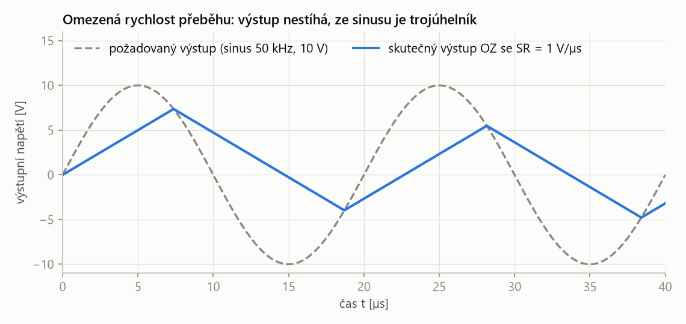
Když signál vyžaduje rychlejší změnu, než OZ zvládne, výstup jede s konstantním sklonem SR a ze sinusu je trojúhelník s menší amplitudou. Nejde o pomalý pokles zisku jako u filtru, ale o tvrdé zkreslení – proto se pro rychlé signály volí OZ s vyšší SR.
Vliv frekvence na zisk
- Tabulková hodnota zisku se často udává pro „plný výkon“ zesilovače bez zpětné vazby při DC, tj. \(f = 0\ \text{Hz}\).
- Zisk s rostoucí frekvencí klesá.
- „Plný výkon“ OZ trvá až do frekvence, kde výkon klesne na polovinu – to je pokles o 3 dB. Tato aktivní část je šířka pásma.
- Na klesající části je součin zisku a šířky pásma konstantní, až zisk klesne na 1 (tranzitní frekvence).
Šířka pásma (bandwidth) zesilovače je rozsah frekvencí od 0 Hz (DC) po mezní frekvenci \(f_M\), na které výkon výstupního signálu klesne na polovinu oproti DC, tj. zisk klesne o 3 dB.
pásmo, ve kterém zesilovač „jede naplno“. Nad ním zesílení klesá. Stejný pojem je u filtrů mezní frekvence.
Součin zisku a šířky pásma (gain-bandwidth product, GBW) je konstantní součin zesílení a frekvence na klesající části frekvenční charakteristiky OZ. Rovná se tranzitní frekvenci, na které zisk OZ klesne na 1 (0 dB).
zesílení a šířku pásma lze „vyměnit“: čím menší zesílení nastavím zpětnou vazbou, tím širší pásmo zesilovač přenese.
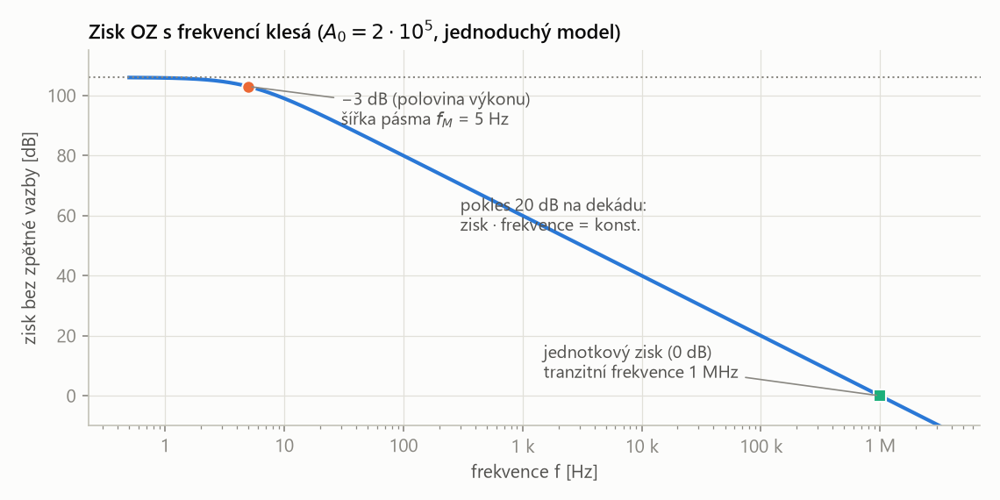
Obrovský zisk platí jen pro velmi nízké frekvence – v modelu už od 5 Hz klesá. Bod −3 dB určuje šířku pásma, bod 0 dB tranzitní frekvenci. Na šikmé části platí zisk · frekvence = 1 MHz (GBW).
OZ s GBW = 1 MHz zapojíme jako zesilovač se zesílením 100. Šířka pásma:
\[ f_M = \frac{\text{GBW}}{A} = \frac{1\ \text{MHz}}{100} = 10\ \text{kHz} \]Pro EKG nebo EEG (do stovek Hz) je to víc než dost.
Kde a proč se vlastně vzaly 3 dB?
Mezní frekvence je definována jako pokles výkonu signálu na polovinu. Slidy krok po kroku ukazují, proč to v decibelech dělá právě −3 dB a proč napětí klesne na 0,707.
1. Výkon signálu daného napětím a proudem na odporu \(R\):
\[ P = U \cdot I = U \cdot \frac{U}{R} = \frac{U^2}{R}\ [\text{W}] \]2. Výkonový zisk v decibelech je \(10 \log\) poměru výkonů. Dosadíme výkony, \(R\) se zkrátí a kvadrát se vytkne před logaritmus:
\[ \begin{aligned} G_\text{dB} &= 10 \cdot \log \frac{P_2}{P_1} = 10 \cdot \log \frac{U_2^2 / R}{U_1^2 / R} \\ &= 10 \cdot \log \frac{U_2^2}{U_1^2} = 20 \cdot \log \frac{U_2}{U_1}\ [\text{dB}] \end{aligned} \]3. Modelově mějme jednotkový vstup: \(U_1 = 1\ \text{V}\), tedy i \(U_1^2 = 1\). Polovina výkonu znamená \(U_2^2 = 1/2\). Napětí na výstupu:
\[ U_2 = \sqrt{U_2^2} = \sqrt{\tfrac{1}{2}} = \frac{\sqrt{2}}{2} = 0{,}707\ldots \]4. Zisk v decibelech:
\[ G_\text{dB} = 20 \cdot \log \frac{\sqrt{2}}{2} = -3{,}0102999\ldots\ \text{dB} \]Decibel je definovaný pro výkon: \(10 \log (P_2/P_1)\). Výkon je úměrný kvadrátu napětí a kvadrát se v logaritmu změní na dvojnásobek – proto je u napětí \(20 \log\). Poloviční výkon je tedy −3 dB, ale napětí přitom klesne jen na 70,7 %, ne na polovinu. Plný přenos = pokles o 0 dB.
Slide „Vliv frekvence na zisk“ říká, že plný výkon trvá „do frekvence, na které je poloviční zisk oproti DC“. Myslí se poloviční výkon. Napěťový zisk je v tom bodě 0,707násobek, ne polovina. Napěťový zisk poloviční (0,5) by byl pokles o 6 dB.
„Mezní frekvence je tam, kde výkon klesne na polovinu. Výkon je \(U^2/R\), takže v decibelech platí
\[ 10\log\frac{P_2}{P_1} = 20\log\frac{U_2}{U_1} \]Polovina výkonu znamená \(U_2^2 = 1/2\), tedy napětí klesne na \(\sqrt{2}/2 = 0{,}707\), a to je
\[ 20\log 0{,}707 = -3{,}01\ \text{dB} \]Proto se mezní frekvence a šířka pásma určují na −3 dB.“
Napěťový komparátor
Napěťový komparátor je zapojení OZ bez zpětné vazby s maximálním zesílením, jehož výstup nabývá jen hodnoty maxima nebo minima napětí (saturace) podle toho, které ze dvou vstupních napětí je větší.
komparátor neměří, o kolik se napětí liší, jen které je větší. Výstup je „ano / ne“ – most mezi analogovým signálem a logikou. Je to jediná běžná aplikace OZ bez zpětné vazby.
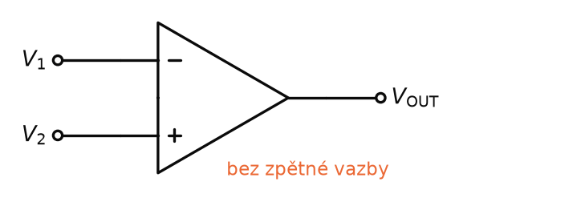
- Výstup je negativní (záporná saturace), je-li \(V_1 \gg V_2\).
- Výstup je pozitivní (kladná saturace), je-li \(V_2 \gg V_1\).
Na slidu je \(V_1 \gg V_2\), ale kvůli obrovskému zesílení stačí nepatrný rozdíl. Při zisku 200 000 a saturaci 13 V:
\[ \Delta U = \frac{13\ \text{V}}{200\,000} = 65\ \mu\text{V} \]Prakticky tedy výstup přeskočí, jakmile jedno napětí převýší druhé (viz převodní charakteristika OZ v Z3). Komparátorům se podrobně věnuje přednáška P6.
Shrnutí
Biosignály mají µV až mV, obvody pracují s volty – základní úpravou je zesílení. Bipolární tranzistor zesiluje proud: proud kolektorem je \(\beta\)-krát větší než proud bází. Zapojení SE potřebuje nastavený pracovní bod (kolektor asi na polovině napájení). S rezistorem z napájení do báze je pracovní bod nestabilní, protože závisí na \(\beta\) a teplotě. Pomáhá zpětná vazba z kolektoru a hlavně dělič v bázi s rezistorem v emitoru: zesílení pak dává poměr dvou rezistorů. SC (emitorový sledovač) má napěťové zesílení 1, ale zesiluje proud; Darlington má zesílení rovné součinu zesílení obou tranzistorů. Diferenční pár zesiluje rozdíl vstupů a je vstupem každého OZ; s LC v kolektoru vznikne laděný zesilovač na rezonanční frekvenci. MOSFET je řízen napětím na gate, má prahové napětí a potřebuje předpětí. Reálný OZ má konečný zisk klesající s frekvencí, offset a omezenou rychlost přeběhu. Šířka pásma končí na −3 dB = polovina výkonu = 0,707 napětí. OZ bez zpětné vazby je komparátor.
Take-home messages
- β (\(h_{21E}\)) = proudové zesílení tranzistoru, \(i_C = \beta i_B\); ze slidu β = 3,84 mA / 10 µA = 384.
- Vstupní odpor do báze \(\approx \beta r_E\) (400 · 25 Ω = 10 kΩ) – BJT zesilovač má malý vstupní odpor.
- Pracovní bod = lehce otevřený tranzistor, kolektor zhruba na polovině napájení.
- Stabilní SE: dělič \(R_1\)–\(R_2\) + \(R_4\) v emitoru; \(A_u = -R_3/R_4 = -7{,}5\), \(R_\text{IN} = 27\ \text{k}\Omega\).
- SC: napětí zachová (\(A_u = 1\)), proud posílí; Darlington: \(\beta \approx \beta_1 \beta_2\).
- Paralelní LC v kolektoru = selektivní zesilovač, \(f_0 = 1/(2\pi\sqrt{LC}) = 96{,}7\ \text{kHz}\).
- MOSFET: řízení napětím na gate, práh 1,8 V → předpětí děličem (4 V); SS ≈ SE, SD = sledovač.
- Reálný OZ: zisk až 200 000, klesá s frekvencí (GBW = konst.), offset, SR obvykle 10 V/µs.
- −3 dB = polovina výkonu; \(20\log(\sqrt{2}/2) = -3{,}01\ \text{dB}\), napětí 0,707.
Otázky ke zkoušce
Proč je základní úpravou signálu zesílení? Co je bipolární tranzistor a parametr β?
Biologické signály mají µV až mV, ale obvody za nimi (TTL, CMOS logika, A/D převodník) pracují s jednotkami voltů. Signál se proto musí zesílit.
Bipolární tranzistor má bázi, kolektor a emitor; malý proud bází řídí velký proud kolektorem a emitorem teče jejich součet:
\[ i_E = i_B + i_C \]Parametr \(\beta\) (\(h_{21E}\)) je proudové zesílení – kolikrát se zesílí proud bází:
\[ \beta = \frac{i_C}{i_B} \]Na slidu: přírůstek \(i_B\) o 10 µA dá přírůstek \(i_C\) o 3,84 mA, tedy \(\beta = 384\).
Nakreslete zapojení SE s napěťovým děličem. Proč je stabilnější než zapojení s jedním rezistorem do báze? Jaký má vstupní odpor a zesílení?
Dělič \(R_1\)–\(R_2\) z napájení nastaví napětí báze, \(R_3\) je v kolektoru, \(R_4\) mezi emitorem a zemí, vstup přes \(C_1\) do báze, výstup přes \(C_2\) z kolektoru.
S jedním rezistorem do báze je pevný proud bází a \(I_C = \beta I_B\) – pracovní bod závisí na \(\beta\), které se mění s teplotou a kus od kusu. S děličem je pevné napětí báze, emitor je o 0,7 V níž a proud určuje \(R_4\):
\[ I_C \approx \frac{U_B - 0{,}7}{R_4} \]Vstupní odpor a zesílení:
\[ R_\text{IN} = R_1 \parallel R_2 \parallel \beta R_4 \] \[ A_u = -\frac{R_3}{R_4} \]Proudové zesílení je dáno \(\beta\). Na slidu: 240 kΩ ∥ 33 kΩ ∥ 400 kΩ = 27 kΩ a \(A_u = -7{,}5\).
Popište zapojení se společným kolektorem a Darlingtonovo zapojení. Jaké je celkové zesílení Darlingtona?
SC (emitorový sledovač): kolektor přímo na napájení, vstup do báze, výstup z emitoru. Napěťové zesílení je 1 (emitor sleduje bázi o 0,7 V níž), ale zesiluje proud, a tím výkon – napětí chci zachovat, proud posílit. Na slidu: emitor na 7,5 V, \(I_C\) = 1 mA, dělič musí dát 8,2 V.
Darlington: emitorový proud \(T_1\) je proudem báze \(T_2\), kolektory jsou spojené, navenek vývody C, B, E. Často bývá \(T_1\) nízkonapěťový a \(T_2\) výkonový. Celkové zesílení je zesílení jednoho krát zesílení druhého:
\[ \beta \approx \beta_1 \cdot \beta_2 \]Jak funguje rozdílový zesilovač s tranzistory? K čemu slouží zapojení s LC obvodem v kolektoru?
Rozdílový zesilovač: dva tranzistory se spojenými emitory napájenými přes společný rezistor ze záporného napětí. Oba se dělí o stejný proud; převýší-li jeden vstup druhý, jeho tranzistor si vezme víc proudu. Výstup z kolektoru je úměrný rozdílu vstupů, souhlasná změna se potlačí. Je to vstupní stupeň OZ.
LC v kolektoru: selektivní (laděný) zesilovač. Paralelní LC má velkou impedanci jen na rezonanční frekvenci, takže zesiluje jen ji – podobně funguje rádio. Na slidu:
\[ \begin{aligned} f_0 &= \frac{1}{2\pi\sqrt{LC}} = \frac{1}{2\pi\sqrt{3{,}3\ \text{mH} \cdot 820\ \text{pF}}} \\ &\cong 96{,}7\ \text{kHz} \end{aligned} \]Čím se liší MOSFET od bipolárního tranzistoru? Proč se u něj používá předpětí gate?
MOSFET je řízen elektrickým polem: napětí na izolované gate ovládá vodivost kanálu mezi source a drain. Do gate neteče proud, takže vstupní odpor je velmi velký. Bipolární tranzistor je řízen proudem do báze.
VA charakteristika má prahové napětí (na slidu 1,8 V) – pod ním MOSFET nevede. Aby zesiloval malý střídavý signál, gate se předpíná děličem nad práh (na slidu 910 k / 330 k z 15 V, tedy asi 4 V). Zapojení SS odpovídá SE, SD je napěťový sledovač.
Jaké vlastnosti má ideální OZ a jak se od nich liší reálný? Vysvětlete offset a rychlost přeběhu.
- Zesílení: ideálně nekonečné, reálně bez zpětné vazby až 200 000, omezené napájením.
- Frekvence: ideálně bez vlivu, reálně zisk klesá; konstantní je součin zisku a šířky pásma.
- Vstupní odpor: ideálně nekonečný, reálně 2 MΩ až \(10^{14}\) Ω.
- Výstupní odpor: ideálně nulový, reálně např. 75 Ω (se zpětnou vazbou až mΩ).
- Výstup: ideálně až k napájení (rail-to-rail), reálně jen téměř.
Offset je výstupní napětí při stejných napětích na obou vstupech, dané nesymetrií vnitřních tranzistorů a impedancí. U 741 se nuluje trimrem 10 kΩ mezi vývody 1 a 5.
Rychlost přeběhu je maximální rychlost změny výstupu ve V/µs (jednotky až stovky, obvykle 10 V/µs). Je daná hlavně vnitřní kapacitou (u 741 30 pF). Vyšší SR je potřeba pro vf aplikace.
Kde a proč se vzaly 3 dB? Odvoďte.
Mezní frekvence je pokles výkonu na polovinu. Výkon:
\[ P = \frac{U^2}{R} \]Zisk v decibelech:
\[ G_\text{dB} = 10 \log \frac{P_2}{P_1} = 10 \log \frac{U_2^2}{U_1^2} = 20 \log \frac{U_2}{U_1} \]Pro \(U_1 = 1\ \text{V}\) a poloviční výkon \(U_2^2 = 1/2\):
\[ U_2 = \frac{\sqrt{2}}{2} = 0{,}707 \] \[ G_\text{dB} = 20 \log 0{,}707 = -3{,}01\ \text{dB} \]Na mezní frekvenci tedy napětí klesne na 70,7 % a výkon na polovinu.
Jak funguje OZ jako napěťový komparátor?
OZ je zapojen bez zpětné vazby s maximálním zesílením – jediná taková aplikace OZ. Neměří velikost rozdílu, výstup nabývá jen maxima nebo minima (saturace). Je-li \(V_1\) na invertujícím vstupu větší než \(V_2\) na neinvertujícím, výstup je záporný; je-li \(V_2\) větší, je kladný. Díky zisku kolem 200 000 stačí rozdíl desítek µV.